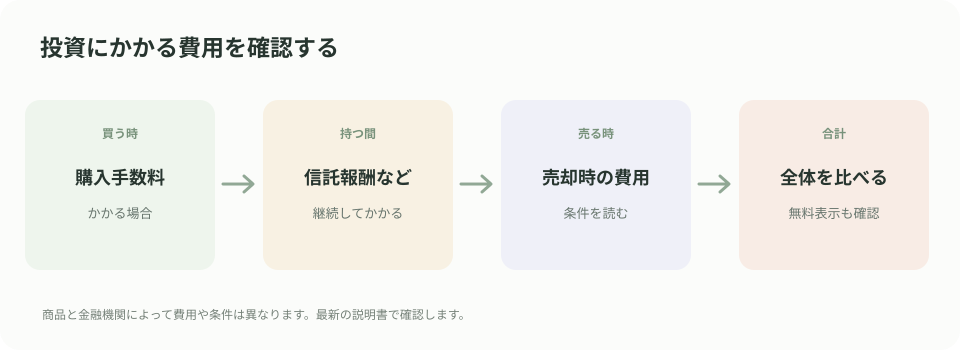

投資の手数料を確認する
費用は購入時、保有中、売却時に分けて確認します。投資信託には保有中に差し引かれる信託報酬などがあります。商品や金融機関によって費用の種類や条件が違うため、最新の目論見書・料金表を読みます。「手数料無料」と表示されていても、他の費用がないとは限りません。

確認しておきたいポイント
- 商品や制度の最新条件を公式情報で確認する
- 手数料、値動き、元本割れの可能性を理解する
- 疑問が残る時は申込みや注文を急がない
費用は購入時、保有中、売却時に分けて確認します。投資信託には保有中に差し引かれる信託報酬などがあります。商品や金融機関によって費用の種類や条件が違うため、最新の目論見書・料金表を読みます。「手数料無料」と表示されていても、他の費用がないとは限りません。
